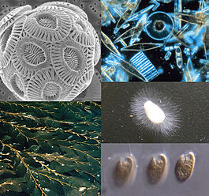

Хроми́сты (лат. Chromista) — полифилетическая группа организмов, одно из царств в системе Томаса Кавалир-Смита, предложенной в 1981 году; ранее хромисты считались подцарством протистов. Это организмы, чьи клетки состоят из двух эукариотических клеток, одна из которой находится внутри другой и включает хлоропласт; а также эволюционные потомки таких организмов, похожие на них, но утратившие внутреннего эукариотического симбионта. К этим организмам относятся некоторые водоросли (гетероконтные), опалины (крупные одноклеточные существа со жгутиками, обитающие в клоаке лягушки), а также некоторые организмы, ранее считавшиеся грибами. Хромисты включают 3 группы организмов: Криптофитовые водоросли (Cryptophyta) Гаптофитовые водоросли (Haptophyta) Гетероконтофитовые водоросли (Heterokontophyta), включающие в себя: Оомицеты, Диатомовые водоросли и др.